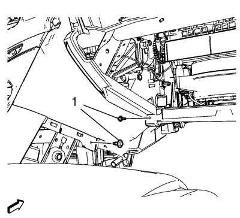
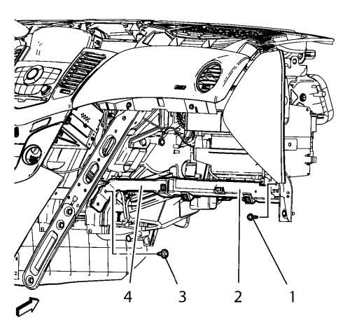
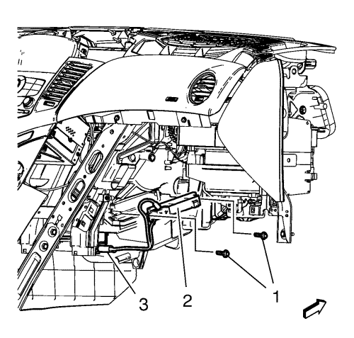

Sustitución del núcleo del calentador auxiliar
Procedimiento de desmontaje
- Desmonte el conjunto del compartimento del panel de instrumentos. Consultar Sustitución del compartimento del panel de instrumentos .
- Desmonte el panel de revestimiento inferior del panel de instrumentos. Consultar Sustitución de la moldura de revestimiento inferior del panel de instrumentos (lado derecho) .

- Desmonte los 2 tornillos del panel de instrumentos (1).

Nota: Retire el compartimento del panel de instrumentos (4) del soporte del compartimento del panel de instrumentos lo suficiente para acceder al tornillo del soporte inferior del compartimento del panel de instrumentos (3).
- Desmonte el soporte inferior del compartimento del panel de instrumentos (2).
Desmonte los tornillos del soporte inferior del compartimento del panel de instrumentos (1, 3).

- Desmonte el núcleo del calefactor auxiliar (2).
| • | Desmonte los 2 tornillos del núcleo del calefactor auxiliar (1). |
| • | Desconecte el enchufe del mazo de cables del núcleo del calefactor auxiliar (3). |
Procedimiento de montaje
Precaución:Consulte Precaución con las fijaciones en la sección Prólogo.
- Monte el núcleo del calefactor auxiliar (2).
| • | Monte los 2 tornillos del núcleo del calefactor auxiliar (1) y apriételos a 2,5 N·m (22 lib. pulg.). |
| • | Conecte el enchufe del mazo de cables del núcleo del calefactor auxiliar. |
Nota: Retire el compartimento del panel de instrumentos (4) del soporte del compartimento del panel de instrumentos lo suficiente para acceder al tornillo del soporte inferior del compartimento del panel de instrumentos (3).
- Monte el soporte inferior del compartimento del panel de instrumentos (2).
Monte los tornillos del soporte inferior del compartimento del panel de instrumentos (1, 3) y apriételos a 9 N·m (80 lib. pulg.).
- Monte los 2 tornillos del panel de instrumentos (1) y apriételos a 2,5 N·m (22 lib. pulg.).
- Monte el panel de revestimiento inferior del panel de instrumentos. Consultar Sustitución de la moldura de revestimiento inferior del panel de instrumentos (lado derecho) .
- Monte el conjunto del compartimento del panel de instrumentos. Consultar Sustitución del compartimento del panel de instrumentos .
| © Copyright Chevrolet. Reservados todos los derechos |